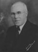

FORMER JUDGES
Judge Alphonso C. Wood
Alphonso C. Wood graduated from Tri-State College in Angola, Indiana in 1895 and received
his law degree from the University of Michigan in 1898.
Judge Wood was elected to the Court of Appeals of Indiana in 1930 and served on the
court for two terms. From January 1, 1931 to January 1, 1939. He was Chief Judge for the
May 1932, November 1933, and November 1936 terms.
He was a Mason and a member of the Steuben County and Indiana State Bar Association.
He Practiced law in Angola for 64 years.
He died in Angola, Indiana at age 94.
his law degree from the University of Michigan in 1898.
Judge Wood was elected to the Court of Appeals of Indiana in 1930 and served on the
court for two terms. From January 1, 1931 to January 1, 1939. He was Chief Judge for the
May 1932, November 1933, and November 1936 terms.
He was a Mason and a member of the Steuben County and Indiana State Bar Association.
He Practiced law in Angola for 64 years.
He died in Angola, Indiana at age 94.
